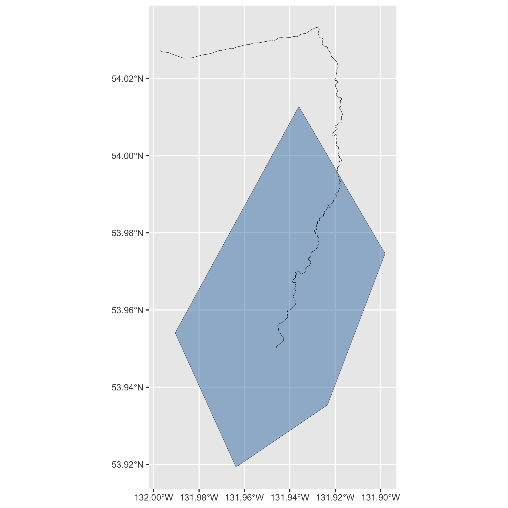

fwapgr is an R package that uses the fwapg API to query the Freshwater Atlas (FWA) of British Columbia (BC). The functions and arguments in fwapgr match those available in the API.
If you are looking for a higher-level R package to query the FWA of BC see fwatlasbc which wraps fwapgr.
Installation
To install the lastest version from GitHub
# install.packages("devtools")
devtools::install_github("poissonconsulting/fwapgr")Introduction
fwapgr allows you to perform three types of operation.
Get Information on Collections
Get information about the collections or a collection’s properties:
Execute Spatial Functions
Execute spatial functions:
Demonstration
Get Yakoun River stream from whse_basemapping.fwa_stream_networks_sp collection:
coll <- "whse_basemapping.fwa_stream_networks_sp"
yak <- fwapgr::fwa_collection(coll, filter = list(gnis_name = "Yakoun River"))
yak
#> Simple feature collection with 129 features and 28 fields
#> Geometry type: LINESTRING
#> Dimension: XYZ
#> Bounding box: xmin: -132.2789 ymin: 53.34324 xmax: -132.1283 ymax: 53.65705
#> z_range: zmin: 1 zmax: 99
#> Geodetic CRS: WGS 84
#> # A data frame: 129 × 29
#> id blue_line_key blue_line_key_5… downstream_rout… edge_type feature_code
#> <chr> <int> <int> <dbl> <int> <chr>
#> 1 59099140 360881586 1551 0 1250 WA24111120
#> 2 59099416 360881586 1551 1808. 1000 GA24850000
#> 3 59099419 360881586 1551 2307. 1250 WA24111120
#> 4 59100176 360881586 1551 2342. 1250 WA24111120
#> 5 59101376 360881586 1551 3960. 1250 WA24111120
#> 6 59102089 360881586 1551 6776. 1250 WA24111120
#> 7 59102227 360881586 1551 8044. 1250 WA24111120
#> 8 59102987 360881586 1551 8275. 1250 WA24111120
#> 9 59103235 360881586 1551 9367. 1250 WA24111120
#> 10 59103900 360881586 1551 9649. 1250 WA24111120
#> # … with 119 more rows, and 23 more variables: feature_source <chr>,
#> # fwa_watershed_code <chr>, gnis_id <int>, gnis_name <chr>, gradient <dbl>,
#> # left_right_tributary <chr>, length_metre <dbl>, linear_feature_id <int>,
#> # local_watershed_code <chr>, localcode_ltree <chr>, stream_magnitude <int>,
#> # stream_order <int>, upstream_area_ha <chr>, upstream_route_measure <dbl>,
#> # waterbody_key <int>, watershed_code_50k <chr>, watershed_group_code <chr>,
#> # watershed_group_code_50k <chr>, watershed_group_id <int>, …Get simplified Yakoun River watershed starting 10km upstream:
blk <- yak$blue_line_key[1]
wshed <- fwapgr::fwa_watershed_at_measure(blk, downstream_route_measure = 10000,
transform = c("ST_Simplify", 2000))
ggplot2::ggplot() +
ggplot2::geom_sf(data = wshed, lwd = 0.15, fill = "steelblue", alpha = 0.5) +
ggplot2::geom_sf(data = yak, lwd = 0.15)
Creditation
fwapgr relies on fwapg API which is created, maintained and hosted by Simon Norris at Hillcrest Geographics.
Contribution
Please report any issues.
Pull requests are always welcome.
Code of Conduct
Please note that fwapgr is released with a Contributor Code of Conduct. By contributing to this project, you agree to abide by its terms.